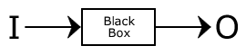
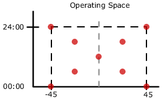
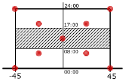
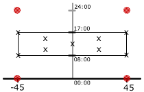

Home >> Black Box Testing
Black Box Paradigm
A Black Box is a function such that f(I) = 0 is defined. The actual definition of f() is not necessarily known.

Sampling Method
- Determine the extremes of the inputs.
eg)
Input Temp -45º C +45º C Time of Day 00:00 24:00  Consider a function of traffic light duration defined for business hours such that the hotter the weather the shorter the duration.
 If business hours are from 08:00 to 17:00 then most of our samples in the total operating space take place when the temperature parameter is not relevant. Therefore, we would consider a more focused sample.
